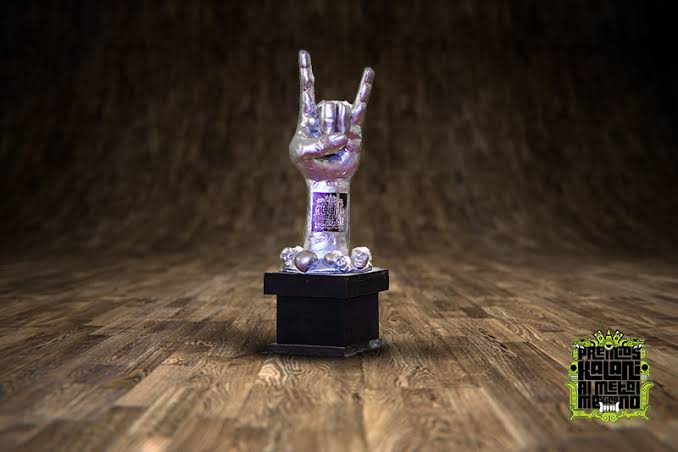
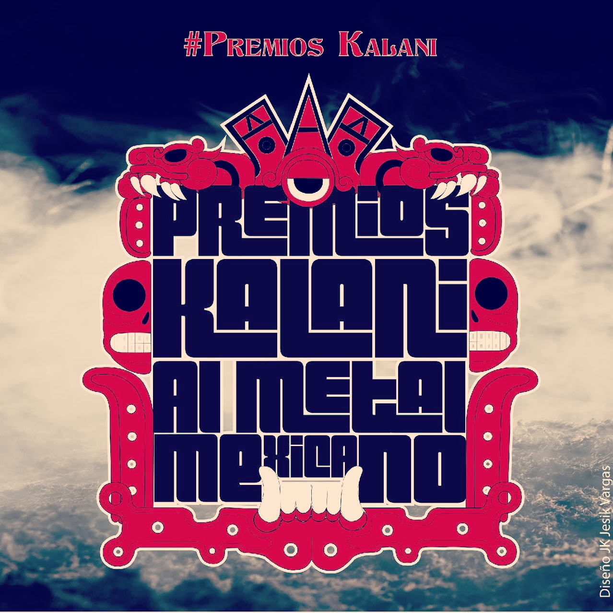
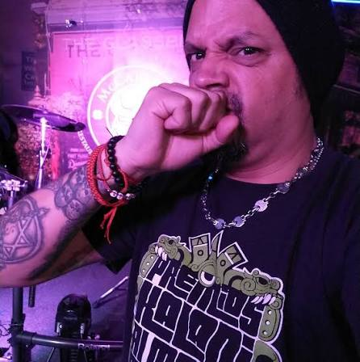
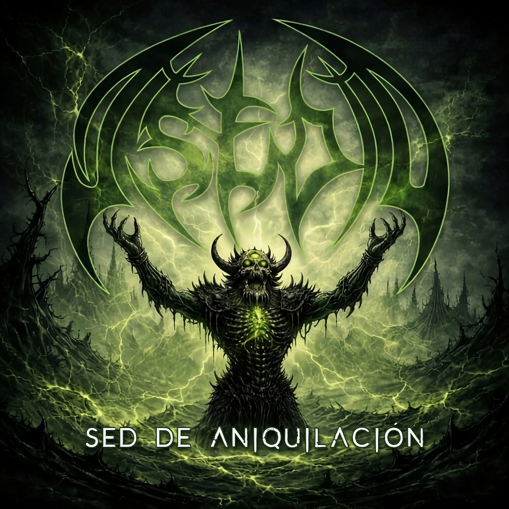
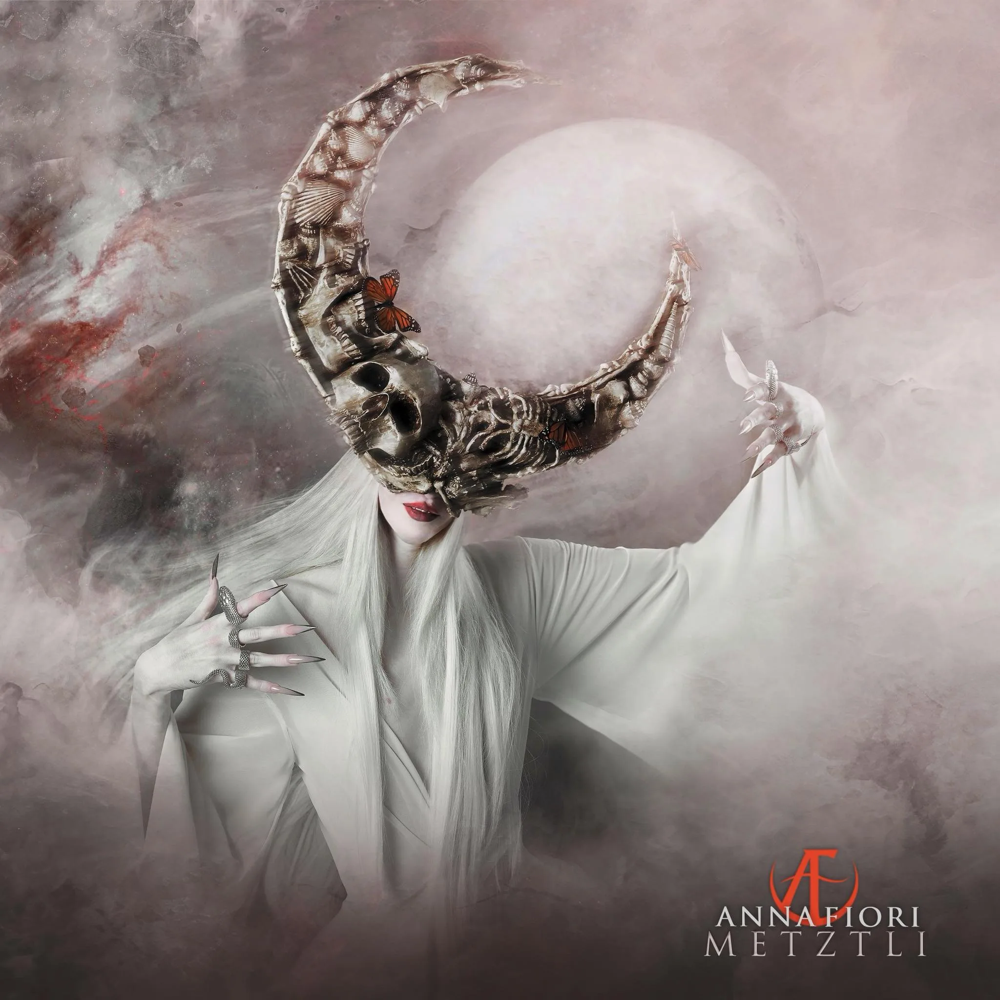
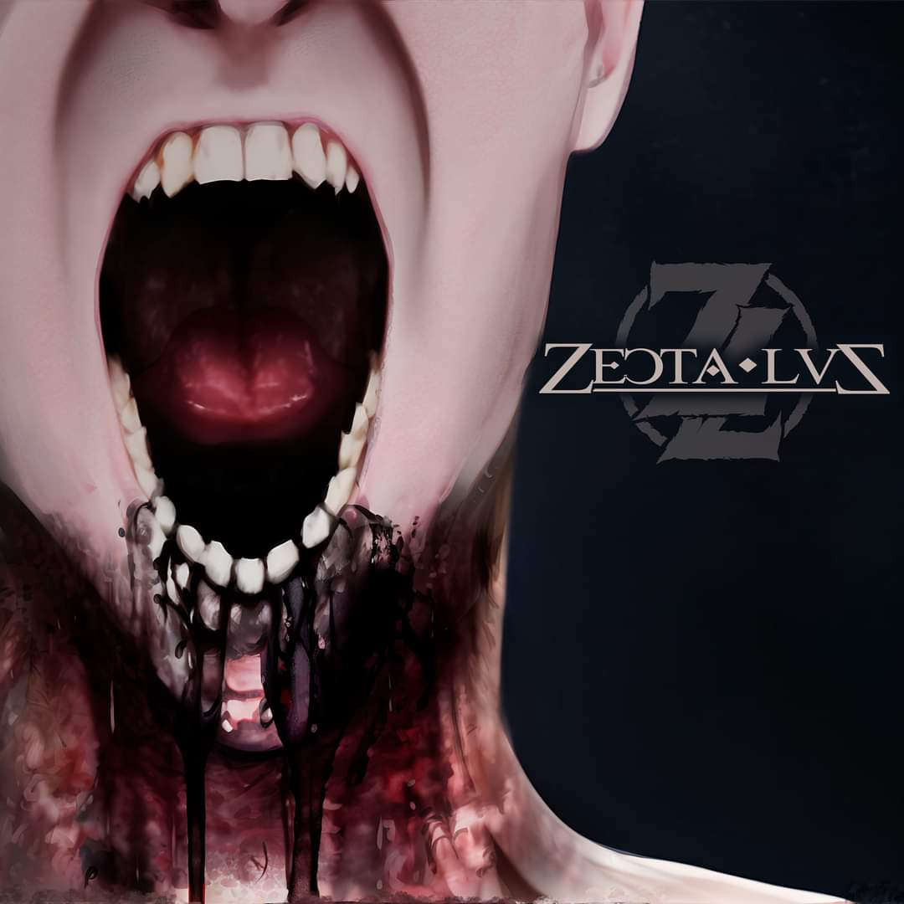

PREMIOS METAL KALANI
XIV ENTREGA · 2026
La ceremonia se realizará el 21 de noviembre en Azcapotzalco. Repasamos el camino de los premios desde sus primeros años.

Los Premios Metal Kalani se preparan para su decimocuarta entrega, programada para el sábado 21 de noviembre de 2026 en el Foro HDX Circus, en Azcapotzalco, Ciudad de México. La organización dio a conocer esta nueva fecha para una ceremonia que volverá a reunir a bandas, músicos, medios y seguidores de la escena pesada mexicana.
La boleta de 2026 muestra la diversidad de proyectos que participan. Incluye categorías como Banda Promesa, Black Metal, Death Metal, Doom, Grindcore, Heavy Metal, Thrash Metal, Metal Progresivo, Metal Cristiano y Metal Contestatario. También reconoce el trabajo audiovisual mediante categorías de video musical y toma de video en vivo. Entre los nominados hay propuestas de la Ciudad de México y de estados como Veracruz, Tlaxcala, Querétaro, Durango y Yucatán. Al cierre de esta nota, la votación permanecía abierta.
La ceremonia también tendrá presentaciones musicales: Vatrax figura entre las participaciones en vivo anunciadas por la organización. El programa completo y los detalles de acceso se darán a conocer conforme se acerque la fecha.
LA CITA DE 2026
Fecha: sábado 21 de noviembre.
Sede: Foro HDX Circus, Azcapotzalco, Ciudad de México.
Edición: decimocuarta entrega.
DE LAS PRIMERAS ENTREGAS A LA EDICIÓN CATORCE
El proyecto impulsado por Mando Kalani sitúa sus inicios en 2012. Con el paso de los años, la entrega fue construyendo un espacio para reconocer a las bandas y a otras personas que sostienen la circulación del metal: medios, espacios culturales y creadores audiovisuales.
La segunda entrega se anunció para junio de 2014 en el Centro Cultural Carranza. En 2015, la tercera edición llegó al Teatro Ramiro Jiménez con alrededor de veinte categorías. El mismo teatro recibió la cuarta entrega en 2016, una edición que distinguió a proyectos y espacios como Kráneos, Agaroth, Acrania, Maligno, Terror Cósmico, el Tianguis Cultural del Chopo y Circo Volador Radio.

La quinta edición llegó en 2017 al Foro Quetzalcóatl. Dos años después, la sexta entrega de 2019 tuvo como sede el HDX Circus; para 2020 se anunció la séptima en la Sala Tepecuícatl. Los premios han transitado así por distintos espacios de la Ciudad de México mientras mantienen la atención en la música pesada nacional.
UNA HISTORIA QUE TAMBIÉN HEMOS SEGUIDO
En 2022, El Rock de Todos los Días apareció entre los nominados a Radio Metal. Un año después tuvimos la oportunidad de conversar con Mando Kalani en nuestra entrevista de 2023, parte de nuestro seguimiento a la historia de los premios. La decimotercera entrega se anunció para noviembre de 2025 en el HDX Circus, foro al que regresará la ceremonia este año.

La nueva edición recoge ese recorrido y vuelve a poner el foco en quienes hacen música, la registran y la difunden. El 21 de noviembre, los Premios Metal Kalani tendrán otra oportunidad de reunir a distintas generaciones y expresiones de la escena mexicana en una misma noche.
OTROS RUIDOS

ASEDIO: Sed de Aniquilación
Metal crudo que no da tregua desde el underground mexicano.

ANNA FIORI: Metztli
Un devastador viaje de metal prehispánico.

ZECTA LUZ: Sombras
El juicio de las sombras en el thrash mexicano.